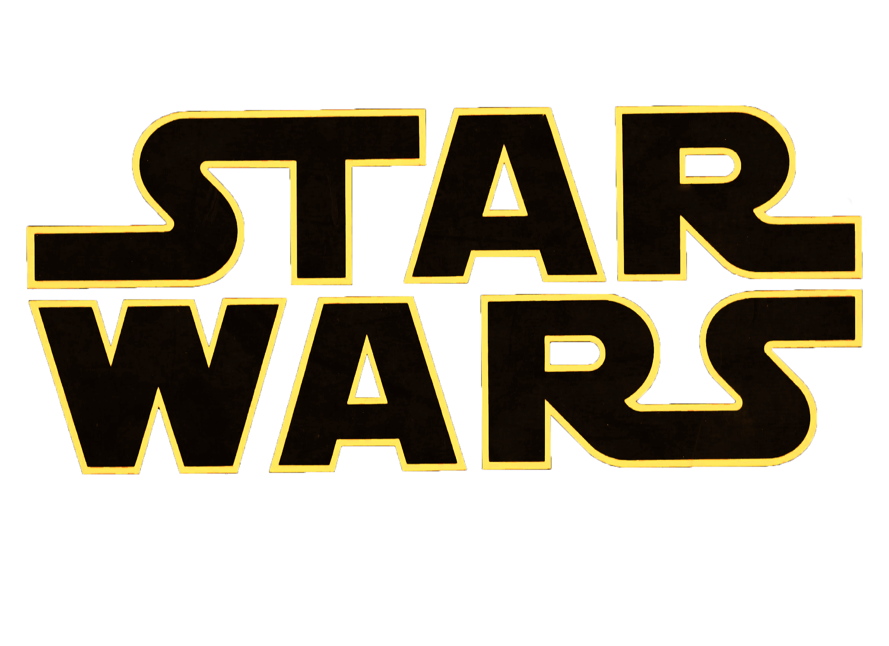

Star Wars is an American epic space opera multimedia franchise created by George Lucas, which began with the eponymous 1977 film and quickly became a worldwide pop-culture phenomenon.
The franchise has been expanded into various films and other media, including television series, video games, novels, comic books, theme park attractions, and themed areas, comprising an all-encompassing fictional universe.
Star Wars is one of the highest-grossing media franchises of all time.
Movies by chronological order:
- Star Wars Episode I: The Phantom Menace (1999)
- Star Wars Episode II: Attack Of The Clones(2002)
- Star Wars Episode III: Revenge Of The Sith (2005)
- Star Wars Episode IV: A New Hope (1977)
- Star Wars Episode V: The Empire Strikes Back (1980)
- Star Wars Episode VI: Return Of The Jedi (1983)
- Star Wars Episode VII: The Force Awakens (2015)
- Star Wars Episode VIII: The Last Jedi (2017)
- Star Wars Episode IX: The Rise Of Skywalker (2019)
Movies by order of release:
- Star Wars Episode IV: A New Hope (1977)
- Star Wars Episode V: The Empire Strikes Back (1980)
- Star Wars Episode VI: Return Of The Jedi (1983)
- Star Wars Episode I: The Phantom Menace (1999)
- Star Wars Episode II: Attack Of The Clones (2002)
- Star Wars Episode III: Revenge Of The Sith (2005)
- Star Wars Episode VII: The Force Awakens (2015)
- Star Wars Episode VIII: The Last Jedi (2017)
- Star Wars Episode IX: The Rise Of Skywalker (2019)
Visit the Star Wars official website here or go back to Homepage